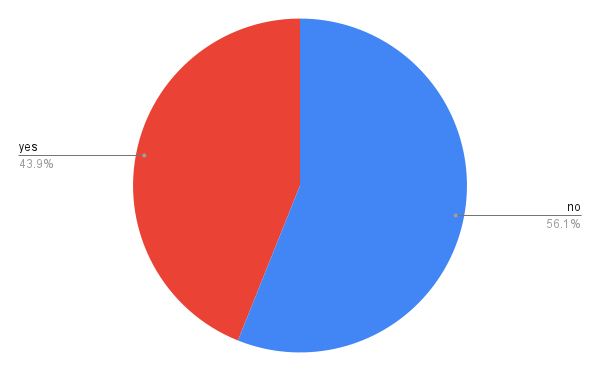

This product is a necessity for the farmer as it will eradicate the need to for obsolete human interaction. This will turn the farming into a set and forget system powered by nature itself. This will make farming more accessible to the people who are working during the spring and summer and will be a great addition to any farmers arsenal. This can also be paid for by governments and charities to help support lower class communities. According to Amazon.com there are thousands of people who want solar timers and that is not the full market we are targeting. https://www.hobbyfarms.com/water-your-garden-with-water-timers/ also says that they help people who are non-gardeners like those at a charity. https://www.epa.gov/soakuptherain/soak-rain-rain-barrels#:~:text=Rain%20barrels%20capture%20water%20from,for%20use%20in%20your%20landscape. also says that a rain barrel will conserve water. We also called a local home depots gardening department and explained the project and she informed us that people may not want to pay for the rain barrel as they are costly.
We asked 66 non-gardeners if they would consider gardening with the Solar greenhouse.

Benson Kramer - "so I don't need to water my plants … that's cool"
Benny Gluck - "I will definitely buy it"
Joe Sideman - " if I can be lazy than I like it"
Our target market is the farming community and the charity community. We are looking to get around five thousand consumers for our project to start and as we grow that will expand. We will be targeting the communities with advertising on common gardening websites and by making deals with small businesses.
Our project stands out from other similar projects due to the integrated alarm system. This system is able to notify the owner of the greenhouse when there is a lack of resources, such as water. This is important because nothing else on the market is able to do this, and this feature is crucial to the greenhouse. This project is also cheaper and easier to understand/work with then almost everything else available in the market. Our product can also be set up anywhere regardless of outlet location or hose.